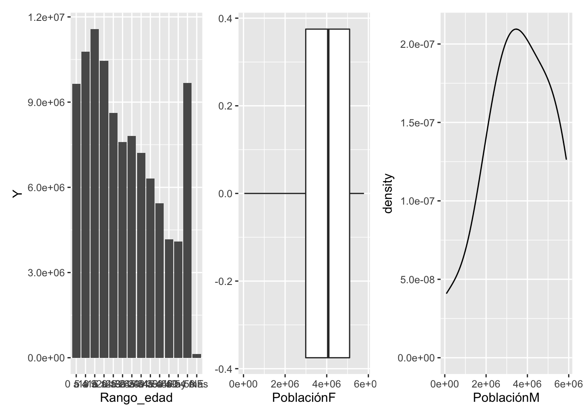

Capítulo 7 Graficación de datos: Ggplot
Finalmente, uno de los paquetes más famosos del tidyverse es ggplot, el cual esta diseñada para representar la información obtenida de los datos mediante gráficas con un excelente control de todos los elementos gráficos tratados como objetos. Dicha paquetería está basada en el libro The Grammar of Graphics de Leland Wilkinson.
Como siempre, una de las mejores fuentes rápidas para recordar alguna función o característica de ellas, es la Cheat Sheet oficial, aunque hay una enorme cantidad de ejemplos y tutoriales para esta paquetería. A criterio personal recomendaría los siguientes enlaces para estudiar más a fondo todo lo relacionado con este gran mundo que aún sigue en crecimiento.
- ggplot2: Elegant Graphics for Data Analysis de Handley Wickham.
- R Graphics Cookbook: Practical Recipes for Visualizing Data de Winston Chang.
- R for Data Science de Hadley Wickham.
- A ggplot2 Tutorial for Beautiful Plotting in R.
- Be Awesome in ggplot2: A Practical Guide to be Highly Effective - R software and data visualization.
- An Introduction to Ggplot2.
Independientemente de la gráfica que se esté realizando, la idea básica en ggplot para construir una gráfica es mediante el uso de capas. Algunos que tengan experiencia en programas diseñados para la creación de imágenes entenderán que el uso de capas otorga un mayor control sobre los elementos gráficos del resultado final. Mediante cada capa se agregan elementos gráficos que proporcionan algún tipo de atributo extra a toda la imagen. Se comenzará siempre con la capa donde se adjuntarán las capas restantes.
Para este ejemplo se tomará la base de datos que ya se ha estado utilizando en las anteriores secciones con el objetivo de crear una gráfica donde se represente el comportamiento de la población total a medida que avanza el rango de edad.
Population_total_range <- Population_FEntityWS %>%
mutate(Rango_edad = factor(Rango_edad, levels = unique(Rango_edad))) %>%
group_by(Rango_edad) %>% summarise(Y = sum(`Población Total`))
ggplot(Population_total_range)
Esta primera capa se puede pensar como la hoja o la superficie donde se comenzaría a realizar un dibujo.
En la bibliografía que se menciono al inicio se puede encontrar más información sobre el comportamiento interno de ggplot, por ahora es bueno saber que la función ggplot y sus subsecuentes toman los datos y aplican transformaciones para traducir dicho contenido en información que pueda ser utilizada para la determinación de colores, geometrías, escalas y hasta espacio geométrico. Algo que hay que tomar en cuenta al hacer una gráfica con ggplot es el uso del operador +, el cual tendrá una función similar a %>%. Con este se añadirá una capa más a toda la gráfica con la que ya se estaba trabajando.
Population_total_range %>% ggplot() + aes(x=Rango_edad, y=Y)En esta segunda capa se estableció mediante la función aes() aquellas variables que servirán como ejes para mapear la información. Dicha función se puede modificar en cada capa y puede ser un parámetro en la mayoría de funciones de ggplot. Ahora, sólo falta agregar los elementos gráficos para representar las observaciones dadas, es decir la geometría.
Population_total_range %>% ggplot(aes(x=Rango_edad, y=Y)) + geom_point()
¡Así de fácil se obtiene ya la gráfica! Faltan aplicar algunos detalles como el diseño de esta, lo cual sería añadiendo más capas. Véase que en las siguientes instrucciones la gráfica se guardo como un objeto el cual puede ser usado más adelante.
graph_population <- Population_total_range %>% ggplot(aes(x=Rango_edad, y=Y)) + geom_point()
(graph_population_per <- graph_population +
theme(axis.line = element_line(linetype = "solid"),
axis.ticks = element_line(colour = "gray0"),
panel.grid.major = element_line(colour = "gray25"),
panel.grid.minor = element_line(colour = "gray25"),
axis.title = element_text(colour = "gray93"),
axis.text = element_text(colour = "gray82"),
plot.title = element_text(colour = "gray90"),
panel.background = element_rect(fill = "gray33", size = 1.5, linetype = "dashed"),
plot.background = element_rect(fill = "gray21", colour = "gray0",
size = 1.6, linetype = "solid")))
Cada uno de los comandos anteriores son dados para cambiar solo el diseño, bien pudo hacerse todo en capas individuales con la función theme() o, como en este caso, englobar todo el diseño en una capa. Existen muchos elementos que se pueden cambiar y lo más recomendable es ver la documentación oficial de la función theme desde la página Modify components of a theme, la cual contiene ejemplos muy útiles.
Dando más diseño con más capas se puede mejorar mucho la presentación de esta, ya que aún la propia gráfica en si misma no proporciona mucha información para alguien que no tenga conocimiento de la información con la que se esta trabajando. Es decir que falta agregar títulos, nombres informativos en los ejes, una mejor distribución de las etiquetas en los ejes y algunos atributos extra que ayuda en la interpretación y obtención visual más rápida de la información.
(graph_population_per <- graph_population_per +
geom_point(color = "white") + #Esta instrucción pudo colocarse la primera vez de su uso
labs(x = "Rango de edad", y = "Población total",
caption = "Datos obtenidos de los tabulados básicos de la CONAPO (2020)")+
ggtitle("Población total de México por rangos de edad quinquenales en el 2020")+
theme(axis.text.x = element_text(angle = 25))+
scale_y_continuous(labels = scales::comma) +
theme(text = element_text(size=12, family = "Leelawadee UI Semilight"),
axis.title = element_text(size = 9.6),
axis.text = element_text(size = 9),
plot.title = element_text(hjust = 0.5),
plot.caption = element_text(colour = "gray99", size = 7)))En la siguiente página: Ggplot title, Subtitle and caption, se puede ver un poco sobre la manipulación de títulos, subtitulos y captions.
Tal vez sea tedioso estar modificando manualmente cada aspecto estético de la gráfica, por lo que se han dado algunos temas predefinidos para hacer de dicha tarea algo sencillo, estos se pueden obtener con el prefijo theme_; aquí se dejan un par de ejemplos.
library(patchwork)
(graph_population+
labs(x = "Rango de edad", y = "Población total",
caption = "Datos obtenidos de los tabulados básicos de la CONAPO (2020)")+
ggtitle("Población total de México por rangos de edad quinquenales en el 2020")+
scale_y_continuous(labels = scales::comma) + theme_minimal())+(graph_population+
labs(x = "Rango de edad", y = "Población total",
caption = "Datos obtenidos de los tabulados básicos de la CONAPO (2020)")+
ggtitle("Población total de México por rangos de edad quinquenales en el 2020")+
scale_y_continuous(labels = scales::comma) + theme_classic())Lo anterior solo fue un ejemplo de como usar el paquete patchwork, el cual se menciona más adelante en una lista de paquetes útiles, por lo que no se toma en cuenta la mal distribución que se consiguió en los ejes de las gráficas anteriores.
Las siguientes gráficas muestran un poco más de todas las geometrías que incluye ggplot, sin importar por el momento el diseño de dichas gráficas.
(Population_total_range %>% ggplot(aes(x = Rango_edad, y = Y))+geom_bar(stat = "identity"))+
(Population_by_sex_age_Mexico %>% ggplot(aes(x = PoblaciónF))+geom_boxplot())+
(Population_by_sex_age_Mexico %>% ggplot(aes(x = PoblaciónM))+geom_density())
Además de poder asignar las variables a los ejes, también se pueden usar las variables como atributos estéticos para las gráficas. Véase en el siguiente ejemplo el uso de la variable Entidad Federativa para agregar color a las barras en el siguiente gráfico de barras.
#Por rango de edad ¿Qué sexo predomina y en que estado se encuentra dicho resultado?
Population_FEntityWS %>%
mutate(SPredominante = if_else(PoblaciónM>=PoblaciónF, "M", "F")) %>%
mutate(S = if_else(SPredominante == "M", PoblaciónM, PoblaciónF)) %>%
group_by(Rango_edad) %>%
top_n(1, S) %>%
ggplot(aes(x = Rango_edad, y = `Población Total`, fill = `Entidad Federativa`))+
geom_bar(stat = "identity")+
labs(x = "Rango de edad", y = "Población total")+
ggtitle("Población total por rangos de edad quinquenales \n del sexo dominante en México 2020")+
theme(axis.text.x = element_text(angle = 25))+
scale_y_continuous(labels = scales::comma) +
theme(text = element_text(size=12, family = "Leelawadee UI Semilight"),
axis.title = element_text(size = 9.6),
axis.text = element_text(size = 9),
plot.title = element_text(hjust = 0.5),
plot.caption = element_text(colour = "gray99", size = 7))
Bien se podría hacer más patriótica la gráfica anterior.
Population_FEntityWS %>%
mutate(SPredominante = if_else(PoblaciónM>=PoblaciónF, "M", "F")) %>%
mutate(S = if_else(SPredominante == "M", PoblaciónM, PoblaciónF)) %>%
group_by(Rango_edad) %>%
top_n(1, S) %>%
ggplot(aes(x = Rango_edad, y = `Población Total`, fill = `Entidad Federativa`, color = SPredominante))+
geom_bar(stat = "identity")+
labs(x = "Rango de edad", y = "Población total", fill = "Entidad Federativa: ", color = "Sexo Predominante: ")+
ggtitle("Población total por rangos de edad quinquenales \n del sexo dominante en México 2020")+
theme(axis.text.x = element_text(angle = 25))+
scale_y_continuous(labels = scales::comma) +
theme(text = element_text(size=12, family = "Leelawadee UI Semilight"),
axis.title = element_text(size = 9.6),
axis.text = element_text(size = 9),
plot.title = element_text(hjust = 0.5),
plot.caption = element_text(colour = "gray99", size = 7),
legend.position = "top",
legend.direction = "horizontal",
panel.grid.major = element_line(linetype = "blank"),
panel.background = element_rect(fill = "gray93"))+
scale_fill_manual(values = c("#CE0626","#2C6846"))+
scale_color_manual(values = c("dimgrey", "black"))Además se pueden usar múltiples geometrías en una gráfica. La gráfica siguiente es un gráfico de dispersión de la longitud de los sépalos contra el ancho de los sépalos en la base de datos iris agregando un poco de ruido (se agrega un poco de variación aleatoria a las ubicaciones) junto con un ajuste polinómico a los datos originales.
iris %>% ggplot(aes(x = Sepal.Length, y =Petal.Width))+
geom_point()+
geom_smooth()+
geom_jitter()Hay muchas más otras funciones y geometrías que se podrían explorar y que haría de este sección muy larga. Para resumir un poco, se deja una lista de paquetes y funciones que pueden ser de utilidad a la hora de graficar y que han ampliado de gran manera todo el universo de ggplot para hacerlo una de las herramientas principales para crear contenido visual a partir de una análisis de datos.
- Graficación interactiva
- Highcharter
- Plotly
library(plotly)
graph_example_interactive <- Population_FEntityWS %>%
mutate(SPredominante = if_else(PoblaciónM>=PoblaciónF, "M", "F")) %>%
mutate(S = if_else(SPredominante == "M", PoblaciónM, PoblaciónF)) %>%
group_by(Rango_edad) %>%
top_n(1, S) %>%
ggplot(aes(x = Rango_edad, y = `Población Total`, fill = `Entidad Federativa`, color = SPredominante))+
geom_bar(stat = "identity")+
labs(x = "Rango de edad", y = "Población total", fill = "Entidad Federativa: ", color = "Sexo Predominante: ")+
ggtitle("Población total por rangos de edad quinquenales \n del sexo dominante en México 2020")+
theme(axis.text.x = element_text(angle = 25))+
scale_y_continuous(labels = scales::comma) +
theme(text = element_text(size=12, family = "Leelawadee UI Semilight"),
axis.title = element_text(size = 9.6),
axis.text = element_text(size = 9),
plot.title = element_text(hjust = 0.5),
plot.caption = element_text(colour = "gray99", size = 7),
legend.position = "top",
legend.direction = "horizontal",
panel.grid.major = element_line(linetype = "blank"),
panel.background = element_rect(fill = "gray93"))+
scale_fill_manual(values = c("#CE0626","#2C6846"))+
scale_color_manual(values = c("dimgrey", "black"))
ggplotly(graph_example_interactive)ggplotly(graph_population_per)library("scatterplot3d")
scatterplot3d(iris[,1:3])- Animación
- animation.
- transformr.
- tweenr.
- gganimate. El el siguiente enlace se pueden ver algunas variaciones del siguiente ejemplo.
library(gganimate)
library(gapminder) #Para obtener la base de datos gapminder: Extracto de los datos de Gapminder sobre esperanza de vida, PIB per cápita y población por país.
ggplot(
gapminder,
aes(x = gdpPercap, y=lifeExp, size = pop, colour = country)
) +
geom_point(show.legend = FALSE, alpha = 0.7) +
scale_color_viridis_d() +
scale_size(range = c(2, 12)) +
scale_x_log10() +
labs(x = "GDP per capita", y = "Life expectancy") + transition_time(year) +
labs(title = "Year: {frame_time}")
- Colores
- Emoji
- Otras librerías muy útiles.
Faltarían muchos otros tipos de gráficas y referencias que hacer, pero una de las mejores formas de obtener más ejemplos son con galerías, algunas son las siguientes
Ejercicios
Investiga el uso de la función
ggplot2::qplot().¿Qué sucede en el primer ejemplo de la sección ggplot si los datos que sirvieron para el parámetro
datade dicha función fueran los siguientes:Population_total_range<-Population_FEntityWS %>% group_by(Rango_edad) %>% summarise(Y = sum(Población Total))?Usar la función
ggplot2::facet_grid()para graficar, por los cinco principales estados (los de mayor población), un gráfico de barras donde se vea la distribución por rangos quinquenales de edad de su población.Utiliza la función
ggplot2::scale_function()para gráficar la función normal en el rango (-5,5).Utiliza la función
latex2exp::TeX()para agregar la ecuación de la función normal en la gráfica anterior.